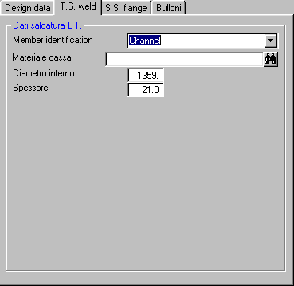

La casella a discesa viene popolata con le membrature che possono essere candidate alla giunzione saldata con la piastra tubiera. La scelta di una di esse genera un collegamento permanente che trascina tutti i dati della membratura in questione.
Se si digita direttamente una descrizione nella casella, l'eventuale collegamento preesistente viene azzerato, e quindi sarà possibile introdurre localmente i dati relativi alla membratura collegata.